3D
Start from an empty Scratch project (rpf.io/scratch-new — remember to delete the cat sprite).
Create a new sprite, clicking 'Paint', rather than 'Choose a Sprite'.
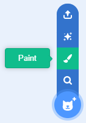Zoom in until the chequered background becomes large, then select the Circle tool, change the Fill colour to white, the Outline thickness to 0, and draw a 2 pixel by 2 pixel circle — this should fill a quarter of a chequered tile.
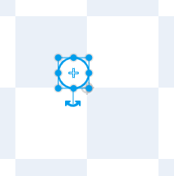Paint a black backdrop.
Hover over 'Choose a backdrop', but click 'Paint' rather than 'Choose a backdrop'.
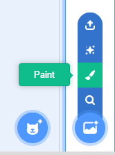Click 'Convert to Bitmap'.
Select the Fill tool, change the Fill colour to black, and click in the drawing area.
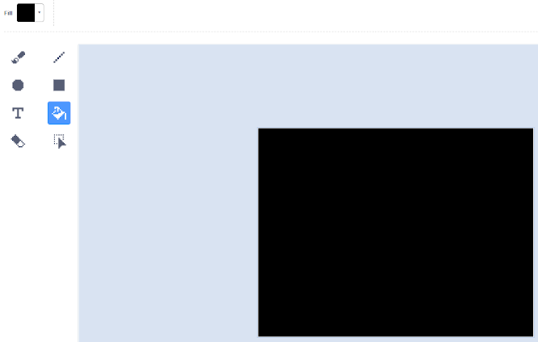When we work with clones, like we did in Modules 2 and 4, what do we usually do?
Click on Sprite 1, click the Code tab, and add code to hide the template and show 10 clones when the green flag is clicked.
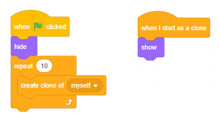Click the green flag. What do you see?
We need to give each clone a different position, but in this module that position will be in 3D (three dimensions). We will then convert that 3D position into a 2D position on the screen.
Create three variables named x, y and z, being sure to check 'For this sprite only'.
We'll use x to measure how far right or left a star is and y to measure how far up or down. We'll use z to measure how far into the screen a star is.
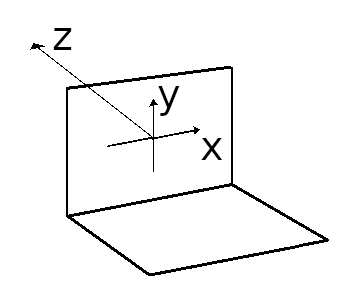After showing a clone, set its x and y to a random number between -100 and 100, but set its z to a random number between 1 and 100, because we're going to say that
- z is zero at your computer screen
- if stars have z less than zero they are behind you
- if they have z greater than zero they are in front of you
Does your code look like this?
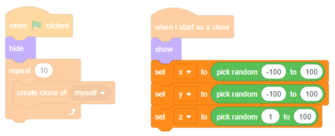We now need to project these stars' 3D positions into 2D positions on the screen. This uses some Maths that older kids will have learnt at school but younger ones won't, so I'll just tell you the answer — we'll need to divide x by z to give the x position on the screen (and similar for y). We'll add that code in a moment.
We want to create the illusion that we're flying forwards — we can do that by repeatedly decreasing each clone's z until it's behind us.
Add the following code:
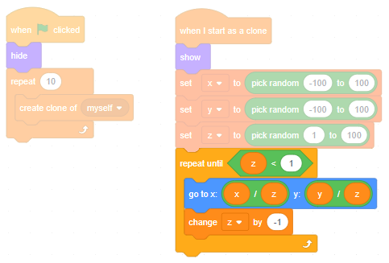Click the green flag. What do you see?
There are about a hundred billion (100,000,000,000) stars in our galaxy. We need a lot more than the ten we have here.
Reusing clones
In earlier modules when we created clones, we would delete them once we'd finished with them. But Scratch only lets us create a maximum of 300 clones. To create the illusion of flying through a galaxy of billions of stars, we'll need to reuse clones.
So after the repeat loop, we don't delete the clone, we run all the code again. Not the show, we only need to do that once, but setting the x, y, z, etc. Wrap all that code in a forever loop.
Also, create 300 clones, rather than just 10.
Does your code look like this?
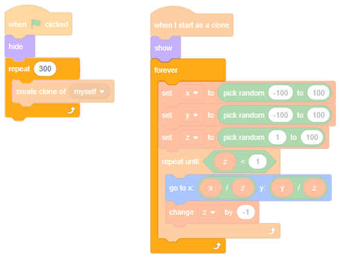Click the green flag. What do you see?
All the stars are in a narrow column of space in front of our screen. If we want to fly through the galaxy, we'll need to spread them out.
Cruising the galaxy
Increase the range of x by setting it to a random number between -10000 and 10000. Increase the y range too, but not as much, try -300 to 300.
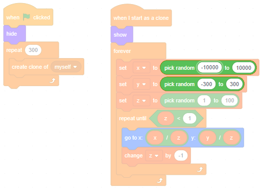With the range of x now bigger than the range of y, will the stars come in a tall thin column, or in a wide flat row?
That's right. It should look like we're flying in the plane of a disc-shaped galaxy.
Click the green flag. Can you see any problems?
Change the repeat-loop condition so that a star gets reused if its z is less than one (as before) or if it's touching the edge.
Be sure to add a go to x: 0 y: 0 just before the repeat-loop:
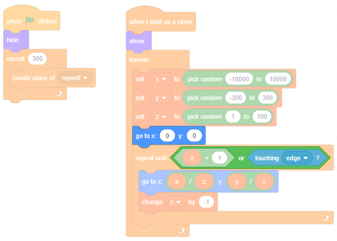Why is that go to x: 0 y: 0 needed?
Click the green flag. Have we fixed the piling-up-at-the-edge bug?
Good. Time for a trick to make things look even better.
Brightness
Stars that are further away tend to appear darker. Further away stars have...
... so, to make them darker, we should set the brightness effect to...
That's right. Set it inside the repeat-loop, so the brightness can change as we fly closer:
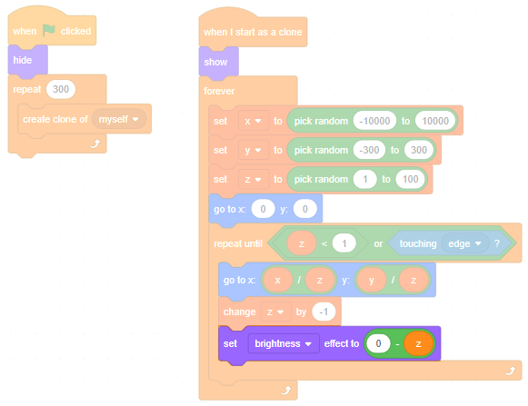Can you see darker stars getting brighter as they get closer?
Time for one last improvement.
Speed
Add a variable named speed (for all sprites).
Change its readout to a slider (like we did in Module 3) and set the maximum value to 10.0.
When speed is bigger, we want the stars to come towards us more quickly. So we should change z by...
That's right. When speed is 1, everything will look like it just did. However, when it's bigger than 1, it will look like we're flying faster; when it's less than 1, it will look like we're flying slower.
Inside the repeat-loop, change z by -speed instead of -1. Does your code look like this?
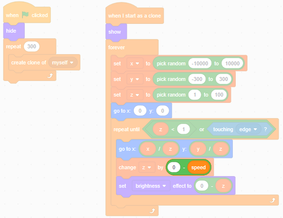Click the full screen button, click the green flag and try flying at different speeds.
Next steps
Exit full screen, and save your game.
See if you can make it better.
Could you make a game where you try to 'tail' another spaceship, staying close enough to monitor it but not so close that it detects you?
What ideas can you come up with?
What did you think of this module?
I didn't like it

It was OK

I loved it